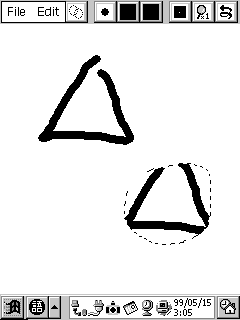
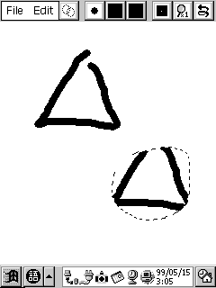
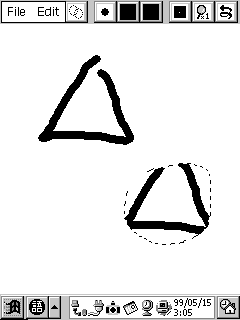
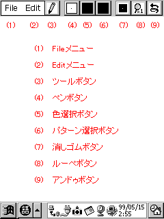

JINZO PAINT (16色版)は、WindowsCE で動作する、ペイント系のお絵描きツールです。
基本的な描画、カットアンドペースト、ルーペ、塗りつぶし、直線・矩形・楕円描画、セーブ/ ロード機能に
加えて、強力な色演算機能を搭載しています。
扱えるデータは、実画面サイズの16色データのみです。
作者の環境での開発および動作確認は、Jornada680 で行っています。

インストールの場合は、JZPaint16.exe を WindowsCE の任意のフォルダにコピーしてください。
アンインストールの場合は、JZPaint16.exe を WindowsCE から削除してください。
レジストリに対する操作は、本プログラムでは行っていません。
|  |
上図が、JINZO Paint の画面です。スタイラスペンで、中央の白い部分に絵を描くことが出来ます。
サイズは実画面サイズで、PsPCではタスクバー表示状態で 240 x 270 ピクセルです。
上部メニューバーで、機能を切り替えることが出来ます。
プルダウンメニューで、以下の機能を使用できます。
Tillanosoftさん作のtGetFile.dllに対応していますので、 PsPC、PocketPC、PocketPostPetの場合はtGetFile.dllをインストールすることにより 操作性の向上が期待できます。
プルダウンメニューで、以下の機能を使用できます。
プルダウンメニューで、以下のツールを選択できます。
(4)を押すことで、ペンのサイズを変更できます。
(5)を押すことで、ペンの色を変更できます。
(6)を押すことで、ペンのパターンを変更できます。
ペンのスタイルは、100%, 87.5%, 75%, 62.5%, 50%, 37.5%, 25%, 12.5% の8種類が有ります。
密度が100%未満の場合は所々間引かれていますが、間引かれたドットは背景色（BackGround Colorダイアログで指定した色）となります。（上図（上）は背景色＝無色(None)）
上図(下）は75%と25%の上に50%で描いたものですが、密度の大きいスタイルの上に密度の小さいスタイルで描いても、密度は元の大きい密度のままとなります。
CTを選択すると、Load CustumToneで指定した16x16pixelのパターンをスタイルに指定します。
Reverse を選択すると、パターンが反転します。
(7)を押すことで、消しゴムのサイズを変更できます。
消しゴムは、色＝白、パターン＝100%です。
消しゴムを選択した時の直前のペンのサイズ、色、スタイルの設定は残るため、再度ペンボタン押す、またはツールボタンから Pen を選択することでその設定から描画を再開できます。
ルーペモードにより、拡大イメージでの編集が可能です。
拡大率は、1倍(通常)、2倍、3倍、4倍、8倍から設定出来ます。
1倍以外の場合は、x1view をチェックすることで左上に原寸イメージが表示されます。
原寸表示設定は、各倍率で個別に設定可能で、起動時は2倍が非表示設定、3,4,8倍が表示設定です。
Handツール、またはカーソルキーでスクロールできます。また、1倍ではスクロール座標は原点に戻ります。
各種の描画に対して、１回の取り消しが出来ます。
ペン描画時の背景色を設定します。
Editメニューから BackGround Color を選ぶと、上図のダイアログが開きます。
透明色および16色のボタンがあります。パターンが100%以下の場合、ここで指定した色が背景色となります。
上図は、描画色＝赤で、(中央)背景色＝無色、(右)は背景色＝緑での描画例です。
表示中の ClipBoard データに対する、色の変換を設定します。
編集から Color Convert を選ぶと、上図のダイアログが開きます。
上から各16色の描画色があり、それぞれに16色の変換色に対するラジオボタンがあります。
なお、縦と横に一本づつガイドラインがあり、左端と上端の各16色の表示をクリックすることでガイドを移動できます。
また、ダイアログの外の描画画面をクリックすることで、縦のガイドラインをクリックした座標の描画されている色に移動できます。左上の斜め斜線のあるボタンをタップすることで、初期状態にリセットします。
上図では、各16色はそれぞれ自身の色に設定しています。
ここで、例を見てください。
アタリ（下絵）を描く例です。
描画色と元画像の色の関係を設定します。
EditメニューからPalette Optionを選ぶと、上図のダイアログが開きます。
上から16色の描画色があり、それぞれに16色の元画像の色に対するチェックボックスがあります。
各チェックボックスをタップすることで、チェックの有無を切りかえられます。
また、上部・左部の各色の表示部分をタップすることで、その列を一括でON/OFFできます。
上図では、描画色＝赤では背景色＝黒はチェックされておらず、それ以外はチェックされています。
これらは、色選択ボタンのプルダウンメニューの右端にも[・]の有無で表示されます。また、[・]をタップすることにより、設定の変更も可能です。
ここで、例を見てください。
黒・薄灰の上に濃灰で描画した場合ですが、通常では上のように黒・薄灰の上に濃で描画してしまいます。
しかし、色オプションで、描画色＝濃灰に対して元画像の色＝薄灰に対するチェックを外すと、下のように薄灰には描画を行いません。
このように、元画像の色に対して描画色で描画を行う/行わないを自由に設定することが出来ます。
さらに、色演算機能の便利な使用方法をいくつか紹介します。
(i) 黒の輪郭線に、色を塗る例です。
上図(上)の輪郭線に色を塗る場合、色オプションで描画色＝濃灰・薄灰で元画像の色＝黒のチェックを外しておくと、
輪郭線はそのままで色を塗ることが出来ます。
(ii) 薄灰で影を付けた上に、濃灰で2段影をつける例です。
色オプションを設定しないと、左下のように黒や白の上にも濃灰を塗ってしまうため、修正が面倒です。
色オプションで、描画色＝濃灰で元画像の色＝黒・白はチェックを外し、薄灰にだけチェックをしておくと、黒・白に対しては描画を行わず薄灰にだけ描画を行うので、はみ出す心配なく濃を描くことが出来ます。
16色の各色のRGB値を設定します。
EditメニューからColor Setを選ぶと、上図のダイアログが開きます。
上には16色の各色のボタンがあり、クリックして設定対象色を選択できます。
また、ドラッグすることで並びを入れ替えることが出来ます。
その下のR,G,Bのスライドバーで、RGBの値を設定します。
ダイアログの外をクリックすることで、その座標の描画されている色に設定対象色を変更できます。
以下に、本プログラムの注意事項を示します。
ご意見、御感想などがありましたら、作者までお願いします。
名前：上野 智弘
e-mail：t-ueno@mtc.biglobe.ne.jp
ホームページ：UENO Tomohiro HomePage
このプログラム作成にあたり、以下の方々にお世話になりました。
このドキュメントの画面キャプチャ画像は、CaptCEにて取り込みました。また、画面キャプチャ画像の赤色文字は説明のために、別途書き足したものです。